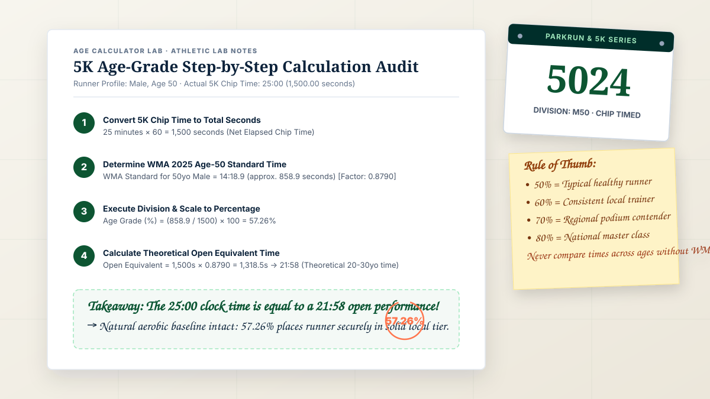
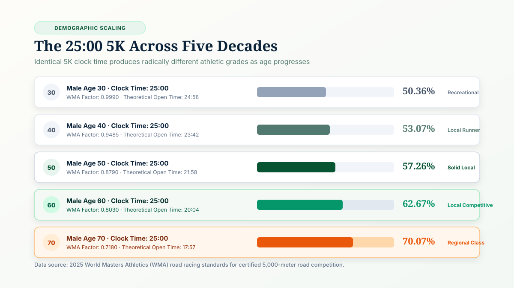
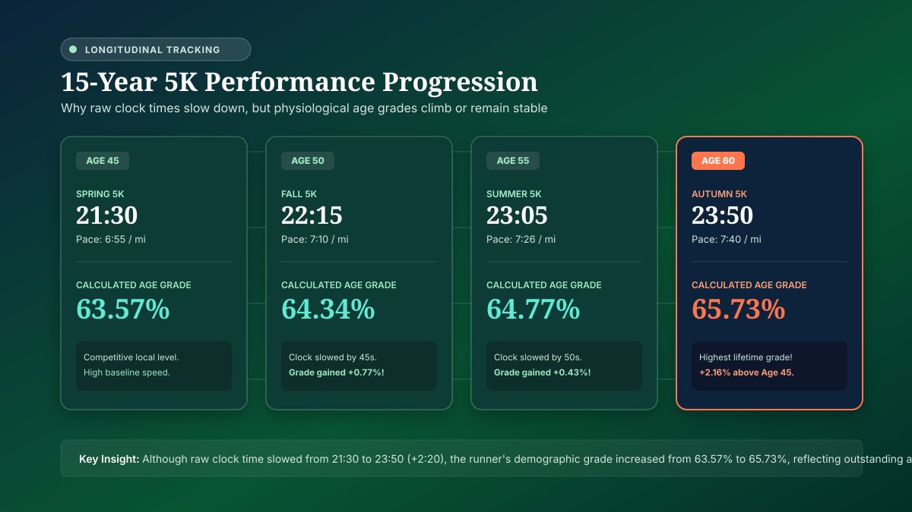
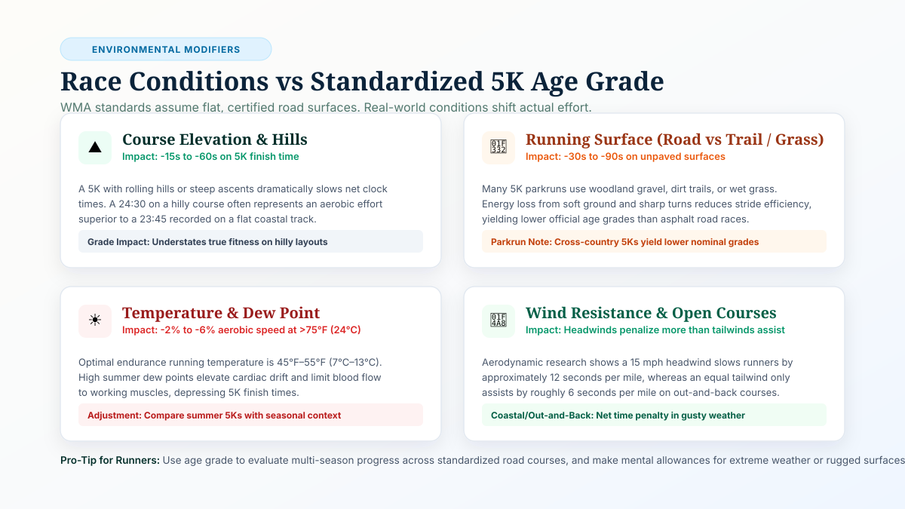

Direct Answer: What Is 5K Age Grading and How Does It Work?
5K age grading is an objective scoring system that evaluates your 5,000-meter road race time against the world-record performance for your exact chronological age and biological sex.
Instead of comparing your 5K finish time solely against younger runners or raw finishing positions, age grading mathematically scales your net time to a percentage scale from 0% to 100%+. A 50% score represents an average healthy recreational 5K runner, 60% indicates a dedicated local competitor, 70% signifies regional-class performance, and 80%+ marks national-class mastery.
Because the 5K is the most frequently run distance worldwide—anchored by weekly Parkrun 5K events and community road races—age grading gives runners of every age an equitable, verified metric to compare performances across generations. To check your own percentage immediately, launch our verified Age Grading Calculator.
Typical fitness runner. Demonstrates consistent aerobic training and regular weekend 5K participation.
Strong club runner. Regular top-third finishes in local 5K fields and community Parkruns.
Podium contender. High aerobic efficiency, structured interval training, and division-leading speed.
What Is 5K Age Grading?
The 5K (5,000 meters or exactly 3.10686 miles) is the premier gateway and benchmark distance in global running. However, because cardiovascular aerobic capacity (\(\text{VO}_2\max\)), maximum heart rate, and muscular elasticity decline at roughly 7% to 10% per decade after age 30, comparing a 52-year-old runner's raw clock time directly to a 24-year-old runner produces an incomplete picture of aerobic achievement.
5K age grading solves this imbalance. Developed by sports statisticians and formalized by World Masters Athletics (WMA) in cooperation with USA Track & Field (USATF), the system compiles single-year demographic world-record benchmarks for men and women from age 5 to 100+.
When you finish a certified 5K, your net chip time is mathematically compared to the theoretical world-record capability of a runner of your exact age and sex. The resulting score allows you to answer three critical training questions:
- Generational Comparison: How does my 24:30 5K at age 54 compare to my 21-year-old child running 21:15?
- Multi-Year Progress: If I ran 23:10 at age 45 and 23:40 at age 52, did my athletic fitness decline, or did I actually hold onto more aerobic strength than the average aging curve predicts?
- Cross-Distance Capability: Does my 5K performance indicate that I am naturally better suited for sprint-endurance or longer distances like the 10K and half marathon?
The 5K Age Grading Formula
The mathematics behind 5K age grading is transparent and standardized. Under official WMA standards, the calculation can be performed using either Age-Standard Times or Age-Graded Factors.
For a detailed breakdown of both mathematical approaches across track and field, explore our foundational companion guide: How Is Age Grade Calculated? Formula, Examples & Guide.
Standard 5K Age Grade Formula
Alternatively, using published single-year age factors:
\(\text{Age Grade (\%)} = \left(\frac{\text{Open World Record in Seconds}}{\text{Age-Adjusted Time}}\right) \times 100\)
Under the updated 2025 WMA standards, the open benchmark standard times for 5,000 meters are 12:35.00 (755.00 seconds) for men and 14:00.00 (840.00 seconds) for women.
Worked 5K Calculation Examples
To see how the formula works in practice, let us examine three realistic runner profiles using certified 2025 WMA road data:
Example 1: Male Runner, Age 50 · 5K Finish Time: 25:00
- Convert race time to seconds: \(25\text{ min} \times 60 = 1,500\text{ seconds}\).
- Find 2025 WMA Standard: The WMA age-50 male 5K standard time is 14:18.90 (\(\approx 858.90\text{ seconds}\)), corresponding to an age factor of \(0.8790\).
- Calculate percentage: \(\left(\frac{858.90}{1500}\right) \times 100 = \mathbf{57.26\%}\).
- Calculate Age-Graded Time: \(1,500 \times 0.8790 = 1,318.5\text{ seconds} \rightarrow \mathbf{21:58}\).
Interpretation: Running a 25:00 5K at age 50 is physically equivalent to an open-division runner (ages 20–30) clocking a 21:58. The runner sits comfortably in the solid local runner tier (50%–59%).
Example 2: Female Runner, Age 45 · 5K Finish Time: 24:00
- Convert race time to seconds: \(24\text{ min} \times 60 = 1,440\text{ seconds}\).
- Find 2025 WMA Standard: The WMA age-45 female 5K standard time is 15:58.00 (\(958.00\text{ seconds}\)), corresponding to an age factor of \(0.8768\).
- Calculate percentage: \(\left(\frac{958.00}{1440}\right) \times 100 = \mathbf{66.53\%}\).
- Calculate Age-Graded Time: \(1,440 \times 0.8768 = 1,262.6\text{ seconds} \rightarrow \mathbf{21:02}\).
Interpretation: A 24:00 5K at age 45 scores 66.53%, placing this athlete in the upper tier of competitive club runners (60%–69%). Her open equivalent time is 21:02.
Example 3: Male Runner, Age 65 · 5K Finish Time: 22:30
- Convert race time to seconds: \(22\text{ min} \times 60 + 30 = 1,350\text{ seconds}\).
- Find 2025 WMA Standard: The WMA age-65 male 5K standard time is 16:33.80 (\(\approx 993.80\text{ seconds}\)), corresponding to an age factor of \(0.7597\).
- Calculate percentage: \(\left(\frac{993.80}{1350}\right) \times 100 = \mathbf{73.61\%}\).
- Calculate Age-Graded Time: \(1,350 \times 0.7597 = 1,025.6\text{ seconds} \rightarrow \mathbf{17:05}\).
Interpretation: A 22:30 at age 65 earns an impressive 73.61% Regional Class score. In open competition terms, this equates to a blistering 17:05 5K.

Same 5K Time Across Different Ages: The 25:00 Benchmark
To grasp why age grading is so transformative for masters runners, observe what happens when five different men of varying ages all finish a 5K road race at the exact same second: 25:00 flat.
To a casual spectator looking at the race clock, all five runners ran at the exact same pace: 8:03 per mile (5:00 per kilometer). However, when demographic factors are applied, the physiological meaning of that 25:00 diverges dramatically:
| Runner Age & Sex | Chip Time | WMA Standard | Age Grade (%) | Theoretical Open Time | Performance Tier |
|---|---|---|---|---|---|
| Male, Age 30 | 25:00 | 12:35.8 | 50.36% | 24:58 | Recreational Baseline |
| Male, Age 40 | 25:00 | 13:16.1 | 53.07% | 23:42 | Recreational Runner |
| Male, Age 50 | 25:00 | 14:18.9 | 57.26% | 21:58 | Solid Local Runner |
| Male, Age 60 | 25:00 | 15:40.1 | 62.67% | 20:04 | Competitive Local |
| Male, Age 70 | 25:00 | 17:31.0 | 70.07% | 17:57 | Regional Class Master |
| Male, Age 80 | 25:00 | 20:34.5 | 82.30% | 15:17 | National Class Elite |
For the 30-year-old runner, a 25:00 5K is a modest recreational achievement (50.36%). But for the 70-year-old master, running 25:00 demands remarkable cardiovascular endurance, yielding an elite 70.07% score that places him in the top regional tier of senior road runners. This principle is explored in depth in our guide on Age Grading for Masters Runners: How It Works & Why It Matters.

What Is a Good 5K Age Grade?
Runners frequently ask: "Is my 5K age grade good?" While "good" depends on training history, biological age, and running volume, the international running community recognizes five broad benchmark tiers. To explore comprehensive percentage breakdowns and percentiles, review our reference guide: What Is a Good Age Grade in Running? Age Grade Percentages Explained.
- Under 50%: Beginner or recreational walker/jogger. Indicates early aerobic conditioning or participation for leisure and social wellness.
- 50% to 59%: Average / Recreational Runner. The statistical center of community road races and weekly Parkruns. Indicates consistent aerobic conditioning.
- 60% to 69%: Solid Local / Club Competitor. Indicates structured training, regular weekly mileage, and tempo workouts. Finishers in this bracket often place in the top third of local fields.
- 70% to 79%: Regional Class / Podium Contender. Exceptional fitness. Runners in this bracket regularly challenge for age-group podium awards at regional 5Ks.
- 80% to 89%: National Class Master. Elite amateur performance. Requires years of dedicated endurance conditioning, strict recovery, and high aerobic economy.
- 90%+: World Class. Rare, historically elite performances that contend for national and world age-group championship titles.
5K Age Grading Table: Male Benchmarks
The following reference table outlines estimated 5K age-grade percentages for men across key age brackets and finish times using 2025 WMA road data:
| Age | 20:00 5K | 22:30 5K | 25:00 5K | 27:30 5K | 30:00 5K |
|---|---|---|---|---|---|
| Age 25–34 | 62.92% | 55.93% | 50.33% | 45.76% | 41.94% |
| Age 40 | 66.34% | 58.97% | 53.07% | 48.25% | 44.23% |
| Age 45 | 68.35% | 60.76% | 54.68% | 49.71% | 45.57% |
| Age 50 | 71.58% | 63.62% | 57.26% | 52.05% | 47.72% |
| Age 55 | 74.76% | 66.45% | 59.81% | 54.37% | 49.84% |
| Age 60 | 78.34% | 69.63% | 62.67% | 56.97% | 52.23% |
| Age 65 | 82.81% | 73.61% | 66.25% | 60.23% | 55.21% |
| Age 70 | 87.58% | 77.85% | 70.07% | 63.70% | 58.39% |
| Age 75 | 93.90% | 83.47% | 75.12% | 68.29% | 62.60% |
5K Age Grading Table: Female Benchmarks
The following reference table outlines estimated 5K age-grade percentages for women across key age brackets and finish times using 2025 WMA road data:
| Age | 22:00 5K | 25:00 5K | 27:30 5K | 30:00 5K | 33:00 5K |
|---|---|---|---|---|---|
| Age 25–34 | 63.64% | 56.00% | 50.91% | 46.67% | 42.42% |
| Age 40 | 66.89% | 58.87% | 53.52% | 49.06% | 44.60% |
| Age 45 | 72.58% | 63.87% | 58.06% | 53.22% | 48.38% |
| Age 50 | 76.06% | 66.93% | 60.85% | 55.78% | 50.71% |
| Age 55 | 80.53% | 70.87% | 64.42% | 59.06% | 53.69% |
| Age 60 | 85.61% | 75.33% | 68.49% | 62.78% | 57.07% |
| Age 65 | 91.82% | 80.80% | 73.45% | 67.33% | 61.21% |
| Age 70 | 99.24% | 87.33% | 79.39% | 72.78% | 66.16% |
Age-Graded 5K Time vs Age-Grade Percentage
When reviewing race results or using an age grading tool, you will notice two distinct metrics: Age Grade Percentage and Age-Graded Time. While they stem from the exact same mathematical formula, they serve different psychological and analytical roles:
- Age Grade Percentage (e.g., 68.4%): A standardized score that directly tells you where your aerobic capability ranks relative to world-record standards. This number is universally comparable across all ages, sexes, and race distances.
- Age-Graded Time (e.g., 20:14): The clock time that an open-division runner (age 20 to 30) would have needed to run to achieve the exact same athletic percentage. If you are 58 years old and run 25:12, an age-graded time of 20:14 shows you what your effort represents in open terms.
Many masters runners find the age-graded time particularly motivating because it allows them to maintain a "virtual personal best" even decades after their absolute youthful speed records were set.
Parkrun and 5K Age Grading
No discussion of 5K age grading is complete without mentioning Parkrun. With over 2,000 weekly free 5K events hosted every Saturday morning across more than 20 countries, Parkrun is the largest weekly user of age-grade calculations in the world.
In every official Parkrun result email and online dashboard, your finishing position, clock time, and age grade are published side by side. Parkrun prominently utilizes age grading for two vital reasons:
- Inclusive Community Comparison: Parkrun intentionally de-emphasizes raw competitive winners in favor of community participation. Age grading allows an 11-year-old junior runner, a 35-year-old mother, and a 68-year-old grandfather to compare their Saturday morning achievements fairly.
- Course Records: In addition to the fastest raw course records, every Parkrun event maintains an "Age-Graded Course Record," honoring masters athletes who scored the highest demographic percentages in the event's history.
However, runners should keep in mind that many Parkrun courses take place on grass, woodland paths, dirt tracks, or multi-lap park loops. These soft surfaces will yield slightly slower finish times than certified, flat asphalt road courses.

Tracking 5K Age Grade Over Time
The greatest training benefit of 5K age grading is its utility as a longitudinal tracking tool. In road running, relying exclusively on raw clock personal records (PRs) inevitably creates athletic frustration as runners enter their 40s, 50s, and beyond.
Chronological aging causes gradual reductions in stroke volume, mitochondrial density, and fast-twitch muscle fiber recruitment. If you ran an 18:30 5K at age 26, you may never run 18:30 again. However, if you run 21:15 at age 52, your age grade may actually be higher than your collegiate PR!
By tracking your seasonal 5K age grade over 5, 10, or 20 years, you decouple your athletic satisfaction from raw seconds and evaluate genuine physiological fitness. If your age grade remains flat year after year (e.g., holding steady at 64%), you are officially outrunning the natural biological aging curve.
For more insights on separating head-to-head race finishes from objective age tracking, see our comparative breakdown: Age-Graded Results vs Age-Group Results: What's the Difference?.
Course Terrain, Elevation, and Environmental Factors
A critical consideration that many runners overlook is that official WMA age grading tables assume ideal road conditions: a flat, paved, sea-level asphalt course in temperate weather.
In the real world, 5K courses vary tremendously. When interpreting your 5K age grade, keep these environmental modifiers in mind:

- Elevation & Hills: Running uphill increases the muscular workload exponentially, while downhill running rarely recovers all the lost seconds. A hilly 5K can easily add 30 to 60 seconds to your clock time, depressing your nominal age grade by 2% to 4%.
- Surface Type: Paved roads provide high energy return. Mud, wet grass, loose gravel, or technical trails absorb footstrike force, slowing your pace by 5 to 15 seconds per kilometer.
- Heat & Humidity: Optimal distance running temperature ranges between 45°F and 55°F (7°C–13°C). In hot summer races with high dew points, cardiac drift diverts blood away from working muscles to the skin for cooling, elevating heart rates and slowing finish times.
- Wind Resistance: Strong headwinds slow runners significantly more than equivalent tailwinds assist them, especially on out-and-back or loop 5K layouts.
5K vs 10K vs Half Marathon Age Grades
Because WMA coefficients are derived across all standard road distances, you can use age grading to diagnose your personal athletic profile. When you enter recent race times across multiple distances into our Age Grading Calculator, compare the resulting percentages:
- Higher 5K Grade than Half Marathon Grade: You possess strong anaerobic power, neuromuscular speed, and fast-twitch fiber recruitment, but may lack long-distance aerobic endurance or weekly mileage volume.
- Higher Half Marathon / Marathon Grade than 5K Grade: You excel at fatigue resistance, glycogen economy, and aerobic efficiency, but lack high-end VO2 max turnover.
- Balanced Grades Across All Distances: Indicates well-rounded endurance training combining weekly long runs, threshold tempos, and weekly speed intervals.
Common Mistakes When Calculating 5K Age Grades
When calculating and comparing 5K age grades, avoid these frequent errors:
- Using Gun Time Instead of Chip Time: In large races with thousands of starters, crossing the starting line can take 30 to 90 seconds. Always calculate age grade using your official net chip time, not gun time.
- Relying on Outdated Tables: WMA periodically updates its standards (major revisions were published in 2006, 2010, 2015, 2020, and 2025). Older online calculators may use outdated 2010 factors, yielding slight discrepancies.
- Assuming GPS Distance Over Certified Courses: GPS watches frequently measure 5Ks at 3.14 or 3.16 miles due to weaving, corners, and satellite drift. Official age grades are calculated against the certified 5,000-meter distance, regardless of what your watch displayed.
- Using 5-Year Age Group Minimums Instead of Exact Age: While race results often group runners into 5-year categories (e.g., M50–54), official age grading requires your exact chronological age on race day. A 54-year-old receives a different factor than a 50-year-old.
How to Calculate Your 5K Age Grade Online
You do not need to look up WMA factor tables or perform long division manually. Follow these simple steps using our verified online tool:
- Navigate to the verified Age Grading Calculator.
- Select 5K (5.00 km / 3.11 miles) as your race distance.
- Enter your exact chronological age on race day and biological sex.
- Input your official net chip finish time in minutes and seconds (e.g., 24:15).
- Click calculate to view your official age grade percentage, performance tier, and open equivalent time instantly.
Ready to Calculate Your Official 5K Age Grade?
Input your 5K finish time, age, and sex into our verified WMA-certified calculator. Discover your demographic percentile, open equivalent time, and performance tier in seconds.
Calculate Your 5K Age Grade Now →Frequently Asked Questions
What is a good 5K age grade?
In competitive road racing and Parkrun, an age grade between 60% and 69% is considered a solid, competitive local runner. Scoring 70% to 79% places you in the regional class tier, 80% to 89% represents national class, and 90% or above signifies world-class master performance.
How is 5K age grade calculated?
5K age grade is calculated by dividing the demographic standard time for your exact age and biological sex (established by World Masters Athletics) by your actual net finish time in seconds, then multiplying by 100.
What is the open world standard time for a 5K?
Under the current 2025 WMA standards, the open male 5K benchmark standard is 12:35.00 (755 seconds), and the open female benchmark is 14:00.00 (840 seconds).
Why does my 5K age grade improve if my clock time is the same?
As you get older, the demographic reference standard increases to account for physiological aging. Running an identical 25:00 5K at age 60 requires greater relative cardiovascular preservation than running it at age 30, producing a higher percentage (62.67% vs 50.36%).
What is an age-graded 5K time?
An age-graded 5K time is your actual finish time multiplied by your age factor, producing the theoretical equivalent time you would have run during your peak open competitive years (ages 20 to 30).
Does Parkrun use official WMA age grading tables?
Yes. Parkrun events globally utilize World Masters Athletics (WMA) road tables to calculate age grades for all participants across every weekly 5K event.
Do hills and weather affect 5K age grading?
Yes, but indirectly. The mathematical formula calculates your percentage based strictly on certified distance and net chip time. Adverse weather, heat, wind, soft turf, or steep hills will slow your finish time, resulting in a lower nominal age grade despite maximal physical effort.
Can I compare my 5K age grade to my 10K or Marathon age grade?
Yes. Because WMA factors are calibrated across all standard road distances, age grading provides an objective metric to evaluate whether your aerobic strength is stronger at short distances like the 5K or longer endurance events like the half marathon and marathon.
Methodology, References & Sports Science Review
This technical guide is authored and reviewed by the editorial team at Age Calculator Lab. Calculations and worked examples adhere strictly to the 2025 Road Standards published by World Masters Athletics (WMA) and adopted by USA Track & Field (USATF) and British Athletics.
Road factors reflect certified 5,000-meter courses measured using the Jones-Oerth calibrated bicycle method. All formulas evaluate net chip times against single-year age standards.